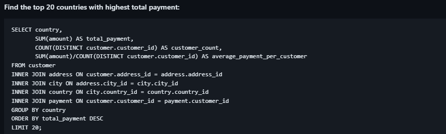
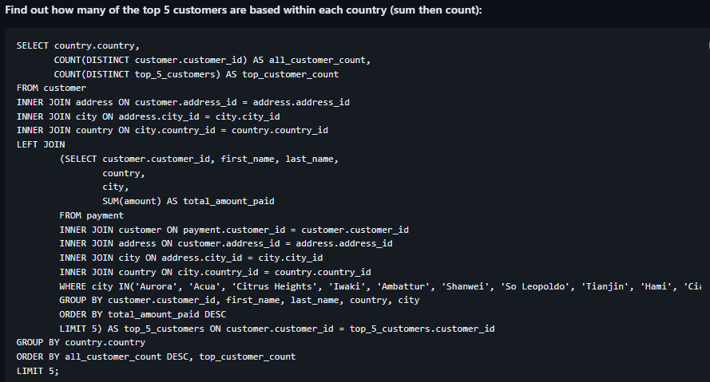
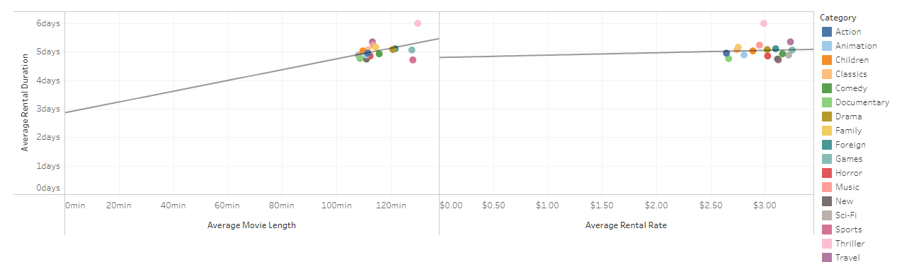

Rockbuster Stealth LLC: Launch Strategy
PROJECT OVERVIEW
Company
Rockbuster Stealth LLC is a movie rental company that used to have stores around the world.
Current Situation
Facing stiff competition from streaming services such as Netflix and Amazon Prime, the Rockbuster Stealth management team is planning to use its existing movie licenses to launch an online video rental service in order to stay competitive.
Task
The Rockbuster Stealth Management Board has asked a series of business questions and they expect data-driven answers that they can use for their 2020 company strategy. Here are the main questions they’d like to answer:Objective
To help Rockbuster Stealth's Business Intelligence (BI) department with the launch strategy for the new online video service.
Context
This project was created with the aim of diving deeper into the use of SQL tool as a part of CareerFoundry's Data Immersion ProgramTOOLS AND SKILLS
TOOLS
- PostgreSQL
- Tableau
SKILLS
- SQL for Data Analyst
- Database Querying
- Filtering Data in SQL
- Cleaning Data in SQL
- Summarizing Data in SQL
- Joining Tables of Data
- Performing Subqueries
- Common Table Expression
- Presenting SQL Result
PROCESS
Entity Relationship Diagram (ERD)
An ERD illustrates the links between the tables in a relational database. My first step was to extract the snowflake ERD with the help of DBVisualizer tool. The snowflake schema is a multidimensional data model which is an extension of the star schema, in which the dimension tables are broken down into subdimensions. From the snowflake ERD below, I separated the table into two parts:Join Table
I used inner join quite often across this project where it helps me look up matching values in the join column to connect two tables. As an example below when I wanted to find out the top 20 countries with highest total payment with the help of their foreign or primary key: Subquery
 My notes:Common Table Expressions (CTE)
My notes:Analysis
 Correlation between average rental duration and average movie length grouped by category:Correlation between average rental duration and average rental rate grouped by category:
RESULTS
RECOMMENDATIONS
Knowing that price rate is not a major factor in renting movies to customers, then it would be nice to increase the average price rate to get more revenue out of it (especially for those top 5 categories). However, we must also consider other aspects before implementing this strategy Knowing Netflix and Amazon Prime get most of their revenue from the United States, then continuing to expand markets in our strong region of Asia (India and China) would be profitable Apart from India and China, we can start to focus our market on other Asian countries especially Philippines, Taiwan and Vietnam which have higher average payouts per customer compared to the top 5 countries Continue to focus on categories that generate more revenue such as Sports, Sci-Fi, Animation, Drama and Comedy Considering that the majority of customers are also from China, adding Chinese subtitles would be a good idea